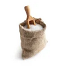

Informations :
- Temps : 40min
- Cuisson : 30min
- Difficulté : Très facile
- Prix : Bon marché
Ingrédients
8 personnes
 40g beurre demi-sel
40g beurre demi-sel 100g de farine
100g de farine 60g sucre en poudre
60g sucre en poudre- 1 pincée de sel
 Sucre glace
Sucre glace- 600g cerises
- 4 oeufs
 20 cl de lait
20 cl de lait 1 sachet de sucre vanillé
1 sachet de sucre vanillé
Préparation :
- Préchauffez le four à 210°C (thermostat 7). Lavez rapidement les cerises sous un filet d'eau fraîche, équeutez-les et égouttez-les. Personnellement j'enlève les noyaux, mais la recette traditionnelle veut qu'on les laisse, donc c'est à vous de voir si vous les laissez ou pas... Faites fondre les 40 g de beurre dans une petite casserole à fond épais. Mélangez dans un grand bol la farine, le sucre, le sel et le sucre vanillé. Incorporez les oeufs peu à peu puis le lait petit à petit en continuant de mélanger. Ajoutez le beurre fondu.
- Beurrez grassement le plat, rangez les cerises puis versez la pâte à clafoutis. Mettez au four pendant 10 mn à 210°C puis baissez à 180°C et cuisez encore 20 mn.
- Servez le clafoutis froid ou tiède, saupoudré de sucre glace.